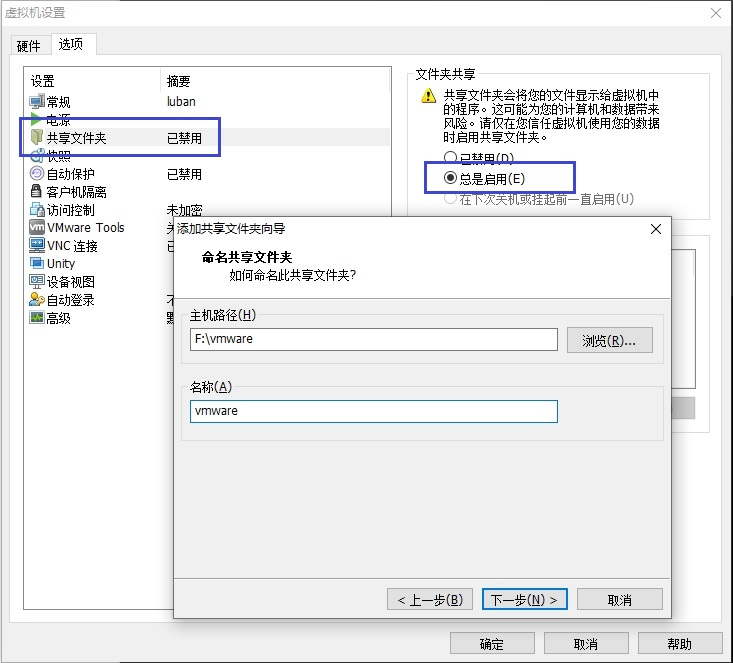

配置虚拟机
Ubuntu 系统安装完成后，需要执行本节描述的配置流程。
在完成配置流程后，打开的系统才是拥有完整功能的 Ubuntu20.04 系统。关于如何准备 Luban 的编译环境，可参考 Ubuntu。
VMWare Tools
VMWare Tools 是 VMWare 提供的一个工具包，必须安装。
除了自带的工具外，VMWare Tools 还可以帮助设置共享和窗口大小，具体安装流程如下所示：
-
在 VMWare 的虚拟机菜单中，点击安装 vmware tools。
-
在 Ubuntu 系统中，打开文件浏览器工具，并找到挂载的 VMWare Tools 光驱。
-
打开 VMWare Tools 光驱文件目录，并复制 VMwareTools-version.gz 文件到系统中的任意目录。
-
解压缩 VMwareTools-version.gz 后，使用以下命令运行安装脚本：
sudo perl vmware-install.pl -
根据提示和安装脚本进行交互，确认相关设置。如果遇到错误，需再次执行一次安装。
执行安装过程中，会重复出现并不断修复兼容性错误。
当 VMWareTools 输出 enjoy the vmware team 提示信息，表示安装成功。
-
在 VMWare 的查看菜单中，选择。
-
重启 Ubuntu。
重启后，屏幕大小可调，表示 VMWareTools 配置成功。
文件共享
虚拟机和 Windows 的文件共享配置是使用虚拟机进行开发的基础。
- 配置 VMWare 端文件共享：
-
在 VMWare 的虚拟机界面，打开设置项。
-
在选项页，选择共享文件夹。
-
在右侧配置页面，选择总是启用。
-
在主机路径处，选择 Windows 上用于共享的文件夹，并在名称输入框中命名共享文件。

-
- 配置 Ubuntu 端文件共享
如果在 VMWare Tools 安装过程中，正确打开了文件共享，则 /mnt/hgfs/ 目录中会挂载出共享的目录。